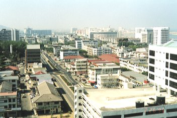
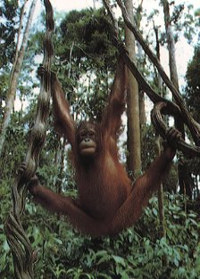
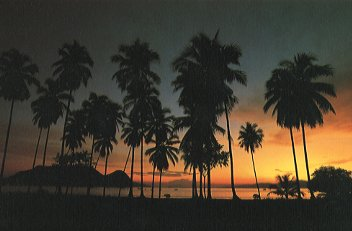

|
【東マレーシア・サバ州】
サバはボルネオ島(世界で３番目に大きい島)の上部を占めており、
西は南シナ海、東はスールー海とセレベス海の波が打ち寄せる約1,440Km(約900マイル)に及ぶ海岸を持つ、
77,500平方キロメートル(29,388平方マイル)の領土をさします。
サバは北緯４度から８度の間に位置し、熱帯気候ではありますが、快適な気候です。
ほとんど毎日、輝く太陽と青空が見られる常夏の地です。
しかし訪れる時期や地方により異なりますが、雨期に出会うと多少不便さを感じるかもしれません。
年間降水量は15センチから30センチと様々です。
一般的に雨期は11月から2月となっています。
サバは現在まで自然災害に見舞われた事がありません。
地理上でも、台風ベルトの下にあるので(その為"風の下の島"とも呼ばれている)気象的災害の恐れは全くありません。
気温は摂氏33度(華氏90度)以上になることはまれで、
普通は日中摂氏23度から31度(華氏74度から88度)ほどで山間部ではこれより涼しくなります。
【サバの人々】
サバは多数の土着の人々と移住者のグループが溶け込んでいる独特な土地です。
人口は150万人を越え、30以上の民族、そして80以上の方言から成り立っており、
それぞれ独自の色彩豊かな文化、伝統、祭事、習慣を持っています。

土着民族とは、カダサン／ドゥスン、パジャウ、ムル、ルングス、ロトゥドゥ、ブルネイ、
オランスンガイ、カダヤン、ビサヤそしてその他の小数民族を含んでいます。
移民族としては、中国人が最も多いようです。
【コタ キナバル】
サバ地方への玄関口となるコタキナバルはサバ州の州都でもあります。
人口はおよそ30万人で、通称Ｋ.Ｋとも呼ばれます。
第2次世界大戦時にその本来の街並みを失い、比較的新しい街となっています。
コタキナバル周辺には、沖合に浮かぶ島々、タンジュンアル海岸、州立博物館、
州立回教徒寺院(モスク)など、興味深い場所が沢山あります。
また、毎週日曜日の朝開かれるガヤ通りの"サンデーマーケット"や"パサーラム(夜市)"などがあります。
近くには、水上家屋のひしめきあうウオータービレッジが見られます。

【ボルネオの野生人】
東海岸沿いのサンダカンの街から車で15分位行くと、世界最大のオランウータン保護区のあるセロピックに着きます。
母親に捨てられたり、それまで捕らわれていたオランウータン("ボルネオの野生人"と呼ばれる)が野生生活に適応出来るよう訓練された後、
森に返されています。餌付けの時には、可愛いオランウータンが歓迎してくれることでしょう。
【祭事】
サバで最も人気のあるお祭りと言えば、5月一杯行われる"カーマタン"と呼ばれる収穫祭です。
この祭りは、カダザン／ドゥスンの人々が豊作を祝う宗教的な儀式で、
彼らの伝統的なパフォーマンスを見る事ができる最良の機会です。
その他イスラム教徒(回教徒)の間で祝われる"ハリラヤ"や、中国人による中国正月のお祝いなどがあります。
【その他】
天候：熱帯性気候
平均気温：平地：摂氏32度 高原地：摂氏：21度
湿度：85-95％
通貨：マレーシアリンギット(RM) 1998年11月現在 1RM=約38円
時差：日本より１時間遅くなっている(GMT-8時間)
電源：交流240ボルト／60サイクル
言語：公用語はマレー語。英語も幅広く活用されている
○ 入国：マレーシア入国に際しては、有効パスポート(ビザが必要な国もある)が必要

|